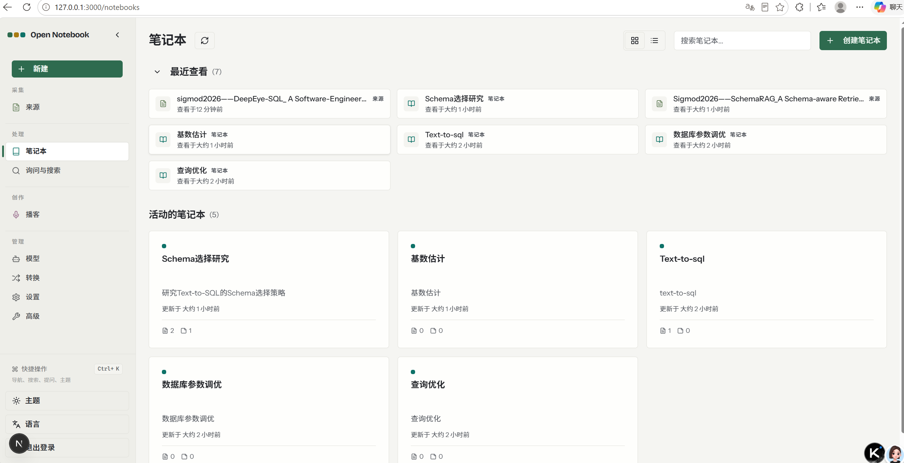
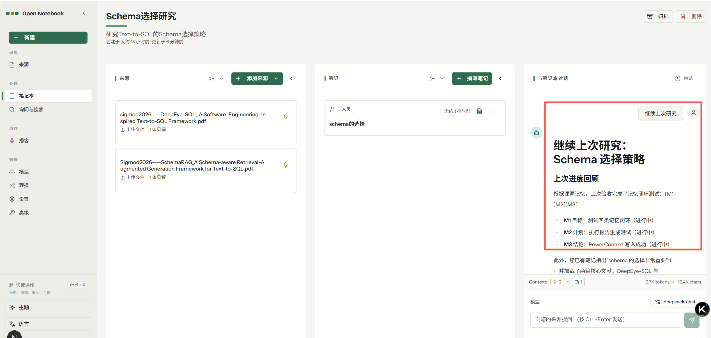
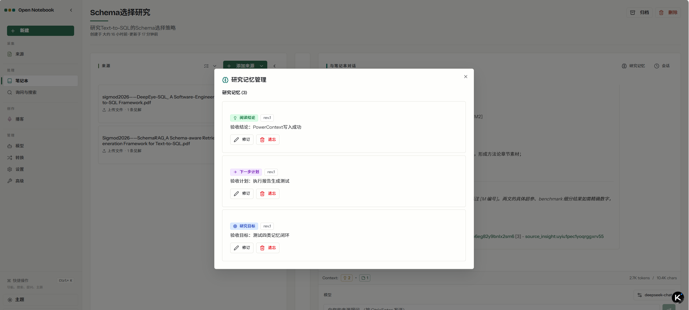
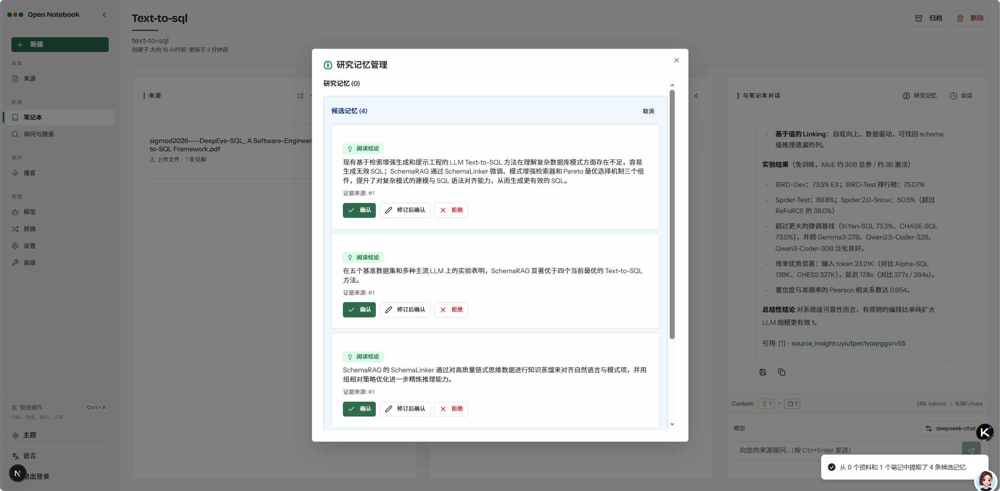
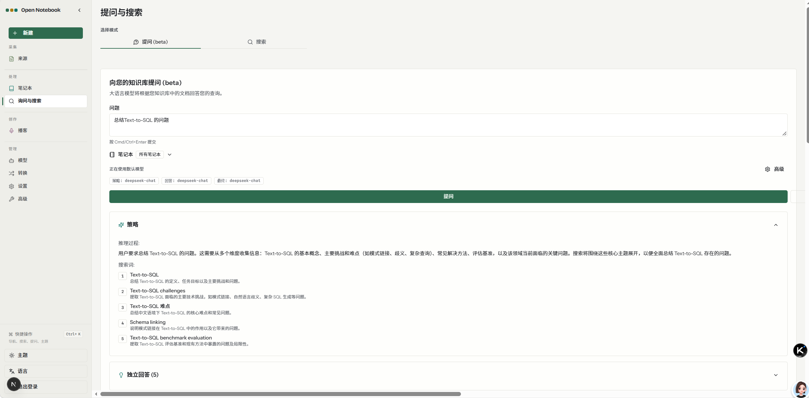
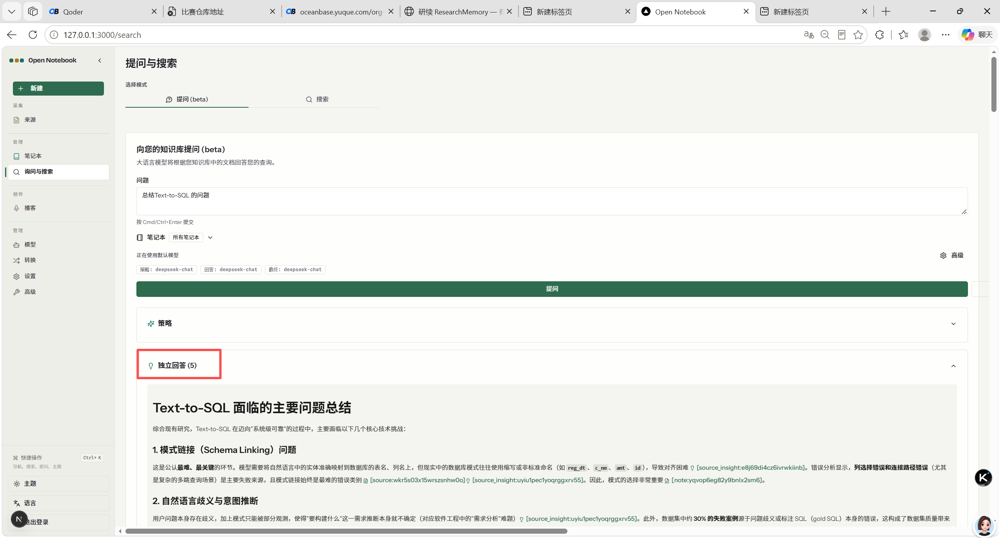
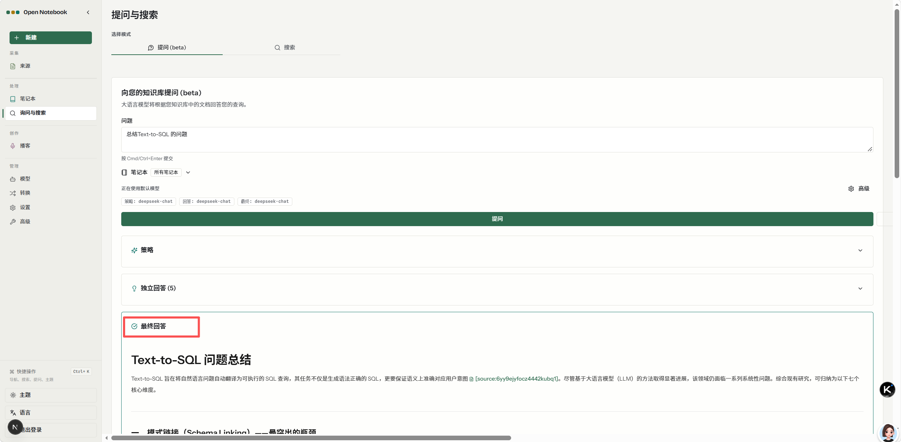
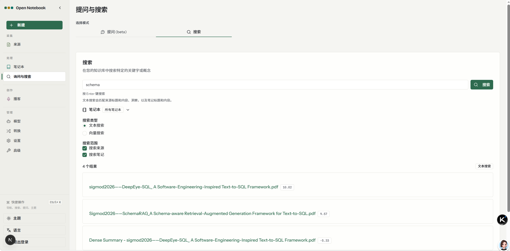
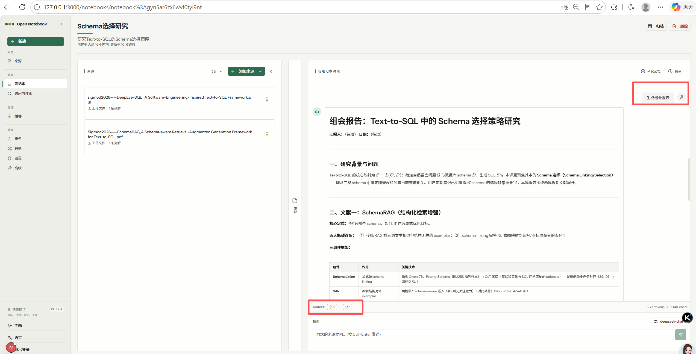
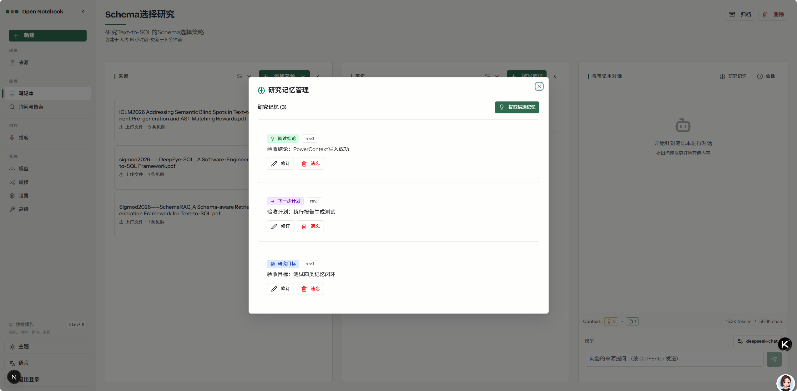

研续（ResearchMemory）是一个为科研阅读场景设计的 AI 助手，通过接入 PowerContext 记忆服务，实现课题目标的持久化保存与跨会话智能接续。
研究目标、结论、问题和计划存储在 PowerContext 中，不依赖聊天历史，关闭浏览器后依然存在。
新建对话时自动恢复上次研究状态，输入"继续上次研究"即可无缝衔接，无需重复说明背景。
每个 Notebook 绑定独立 Scope，课题 A 的记忆不会被课题 B 召回，确保研究上下文不混淆。
传统 AI 聊天工具无法跨会话保持研究记忆，导致每次都要重新建立上下文。
科研阅读中，课题目标、已确认结论、未解决问题和下一步计划散落在不同聊天会话中。隔几天继续研究时，需要重新说明课题背景，AI 无法自动恢复进展。多课题并行时，不同课题的信息更容易混淆。
研续通过 PowerContext 实现课题记忆的持久化保存与跨会话接续。四类结构化记忆（目标/结论/问题/计划）独立存储，每次新对话自动恢复研究状态，不依赖旧聊天记录。
覆盖科研阅读全流程：从记忆管理到报告生成，从跨会话接续到课题隔离。
新建会话时输入"继续上次研究"，系统从 PowerContext 读取记忆，自动恢复目标、结论、问题和计划。不依赖旧聊天记录。
注入资料上下文 + 研究记忆，回复区分：资料说了什么、课题确认了什么、模型建议什么。
一键生成 Markdown 研究报告，包含六部分：目标范围、材料发现、阶段进展、假设问题、下一步计划、引用清单。
每个 Notebook 绑定独立 PowerContext Scope，课题 A 的记忆不会被课题 B 召回。最小粒度的课题隔离。
基于 Open Notebook 前端构建，提供完整的科研阅读工作流界面。以下为六大核心功能的实际运行截图。

左侧导航栏包含 Sources、Notebooks、Ask & Search、Models 四个模块。右侧 Notebook 卡片网格展示所有研究课题，每个卡片显示课题名称、英文描述、标签和统计信息。右上角「+ Create」按钮快速创建新课题。每个 Notebook 绑定独立的 PowerContext Scope，实现课题间的记忆隔离。

在 Chat 面板发送「继续上次研究」，系统自动从 PowerContext 读取 [M1]-[M4] 研究记忆（目标、结论、问题、计划），无缝衔接上次研究进度。AI 回复清晰展示研究目标、结论、待解决问题和下一步计划，不依赖旧聊天记录，记忆独立持久化。

在 Notebook 详情页点击「研究记忆」按钮，打开研究记忆管理对话框。显示当前所有研究记忆（如阅读结论、下一步计划、研究目标），每条记忆包含类型标签、内容摘要、版本号（rev.1）和操作按钮（修订、遗忘）。记忆按类型分组展示，便于快速浏览和管理。

点击「提取候选记忆」按钮，LLM 从资料中自动抽取结构化候选记忆。蓝色背景区域显示所有候选（如 4 条阅读结论），每条候选显示类型标签、内容摘要和证据来源编号。用户逐条确认、修订后确认或拒绝候选记忆，候选不会自动成为正式记忆，确保知识准确性。绿色「确认」按钮、蓝色「修订后确认」按钮、红色「拒绝」按钮清晰区分操作。

在「提问与搜索」页面，选择「提问 (beta)」标签，输入问题（如「总结 Text-to-SQL 的问题」）。系统展示推理过程和搜索词策略，从多个维度收集信息。支持选择 Notebook 范围和模型配置，点击「提问」按钮开始问答。

「独立回答」部分展示 AI 生成的结构化回答（如「Text-to-SQL 面临的主要问题总结」），包含模式链接、自然语言歧义、意图推断等核心技术挑战。回答中嵌入引用标注（如 [source_insight:xxx]、[note:xxx]），点击引用可查看原始资料或记忆详情，便于追溯知识来源。

「最终回答」区域以 Markdown 格式呈现完整的结构化总结（如「Text-to-SQL 问题总结」），包含引言概述和分节论述（如「模式链接 (Schema Linking) — 最突出的瓶颈」）。回答引用真实资料来源（如 [source:6yy9ejyfocz4442kubq1]），内容基于知识库文档生成，兼具学术严谨性与可读性。

切换到「搜索」标签，输入关键词（如「schema」）即可在知识库中检索。支持文本搜索和向量搜索两种模式，可限定搜索范围（来源、笔记）。搜索结果按相关度排序，展示匹配的 PDF 文档标题和相关性分数，快速定位关键资料。

一键生成六段式 Markdown 研究报告：研究目标、主要发现、未解决问题、下一步计划、引用清单。所有引用均关联到真实的记忆 ID 和资料来源，支持保存为 Notebook 笔记。报告格式规范，适合组会汇报和学术分享。

在「研究记忆管理」对话框中，显示所有研究记忆列表，每条记忆包含类型标签（[M1] goal、[M2] conclusion、[M3] question 等）、内容摘要和操作按钮。支持 ETag 乐观并发修订，保留完整历史版本。可从主动记忆中移除（遗忘）条目，遗忘后历史仍可追溯，但不再参与新会话接续。底部显示 ETag 版本信息，确保并发安全。
基于 Open Notebook 扩展，PowerContext 作为独立记忆服务通过 HTTP API 接入。
基于成熟的开源组件构建，不重复造轮子。
| 组件 | 技术 | 版本 |
|---|---|---|
| 前端 | Next.js / React | 16.3.8 |
| 后端 | FastAPI / Python | 3.12 |
| 原有数据库 | SurrealDB | 2.2.1 |
| 记忆服务 | PowerContext Server | 1.4.1 |
| AI 框架 | LangChain / LangGraph | — |
| LLM | DeepSeek API (v4flash) | — |
| 部署 | Docker Compose | — |
5 个命令完成从零到验收的全流程。
# 1. 克隆仓库并进入项目目录 git clone https://github.com/oceanbase/powercontext.git cd powercontext && git checkout feat/qoder # 2. 初始化环境（安装依赖、配置服务） python qoder/scripts/bootstrap.py # 3. 启动全部服务（SurrealDB + PowerContext + Open Notebook） docker compose --env-file qoder/deploy/.env \ -f qoder/deploy/compose.yaml up --build -d # 4. 健康检查 + 导入演示数据 python qoder/scripts/healthcheck.py python qoder/scripts/seed_demo.py # 5. 运行验收测试（19 项检查） python qoder/scripts/verify_acceptance.py
8 个步骤、19 项检查全部通过，覆盖完整功能链路。
从上游固定到发布上线，7 个阶段递进交付，全程在 Qoder IDE 中完成。
代码仓库、在线演示和文档入口。
复用成熟开源项目，不重复造轮子。
复用资料导入、笔记、聊天、前后端框架。源码固定版本 a0f6f308 纳入 qoder/app/。
作为独立 Server 通过 HTTP API 接入，不修改源码。版本 1.4.1，提供记忆持久化、检索、交接报告等核心能力。